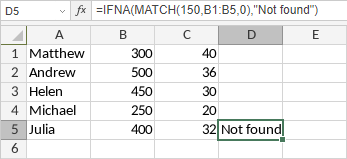

IFNA Funkcija
Funkcija IFNA je jedna od logičkih funkcija. Koristi se za proveru da li formula u prvom argumentu daje grešku #N/A. Funkcija vraća vrednost koju navedete ako formula daje grešku #N/A, u suprotnom vraća rezultat formule.
Sinaksa
IFNA(value, value_if_na)
Funkcija IFNA ima sledeće argumente:
| Argument | Opis |
|---|---|
| value | Argument koji se proverava da li daje grešku #N/A. |
| value_if_na | Vrednost koja se vraća ako formula daje grešku #N/A. |
Napomene
Kako primeniti funkciju IFNA.
Primeri
Slika ispod prikazuje rezultat koji vraća funkcija IFNA.
